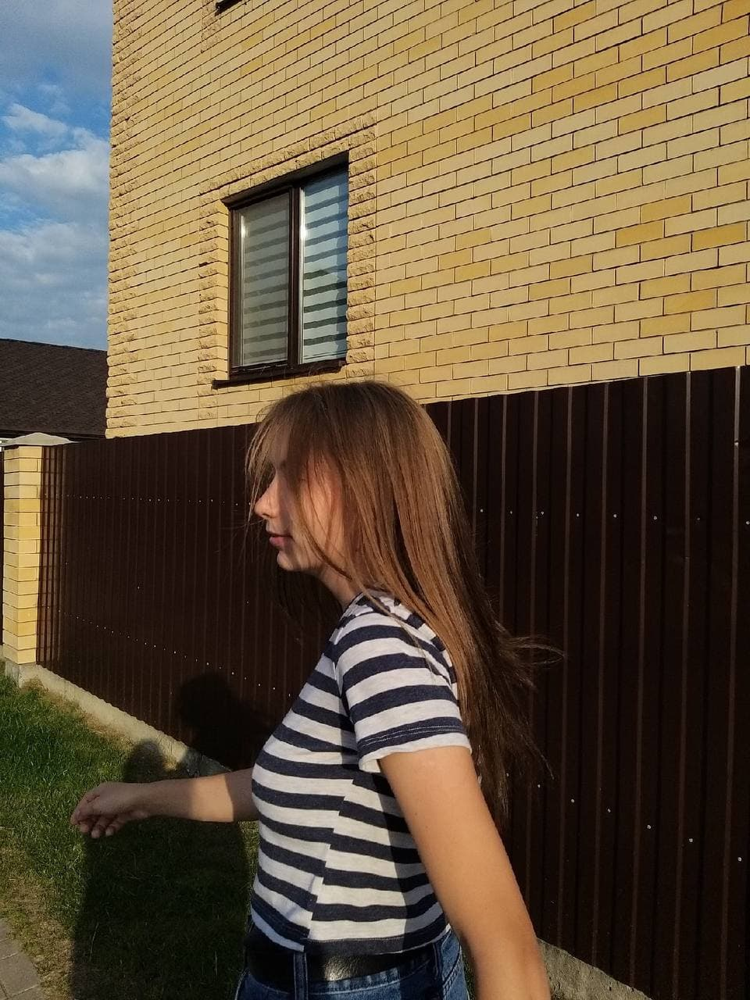
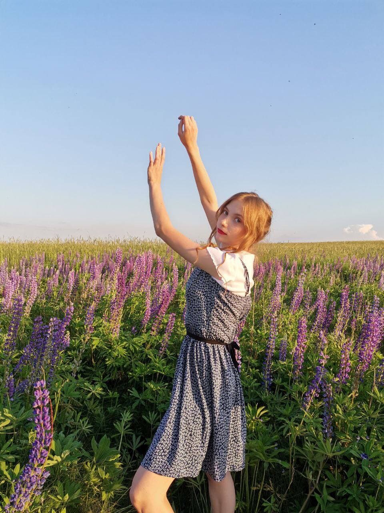

Аня родилась 12.05.2002 года в городе Жлобин. С детства она танцует, вышивает, играет на укулеле и пишет стихи.

А еще Аня любит покушать. За сырники и блинчики душу продаст. Любит песиков Корги. Когда видит их сразу поднимается настроение.
Каждый человек наслаждается музыкой. И Аня не исключение. Вот ее несколько любимых групп: starset, нервы, twenty one pilots. Аня любит смотреть фильмы и сериалы, а также читать книги.
